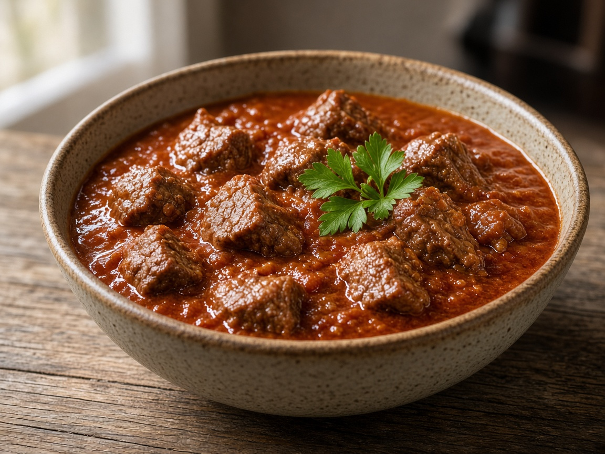
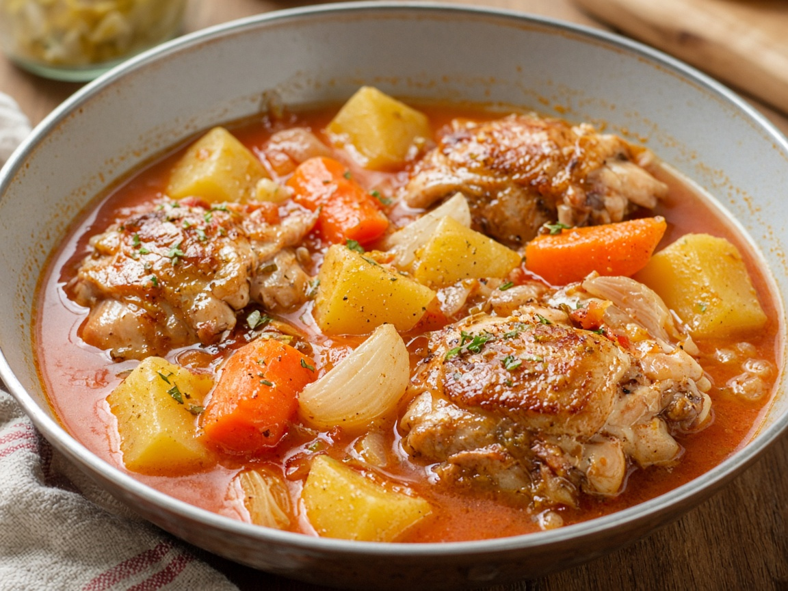
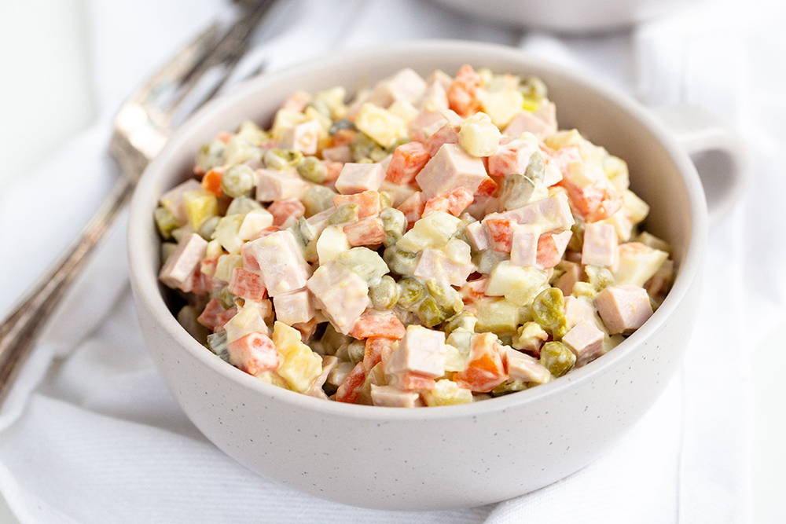

Главная
/
Рецепты
/ Русская кухня
Русская кухня
Домашние русские блюда.
Тип
Первое
Второе
Салаты
Выпечка
Приём
Завтрак
Обед
Ужин
Способ
Жарка
Тушение
Варка
Запекание
Кухня
Русская
Итальянская
Азиатская
Первое
90 мин
190 ккал
Борщ классический
Первое
50 мин
120 ккал
Куриный суп с лапшой
Второе
180 мин
490 ккал
Шашлык из свинины

Второе
90 мин
320 ккал
Гуляш из говядины

Второе
60 мин
210 ккал
Курица тушёная с овощами

Салаты
40 мин
280 ккал
Салат Оливье
Салаты
25 мин
340 ккал
Салат Цезарь с курицей
Выпечка
180 мин
460 ккал
Торт Наполеон
Выпечка
50 мин
240 ккал
Шарлотка с яблоками
Завтрак
30 мин
230 ккал
Блины на молоке
Завтрак
25 мин
250 ккал
Сырники